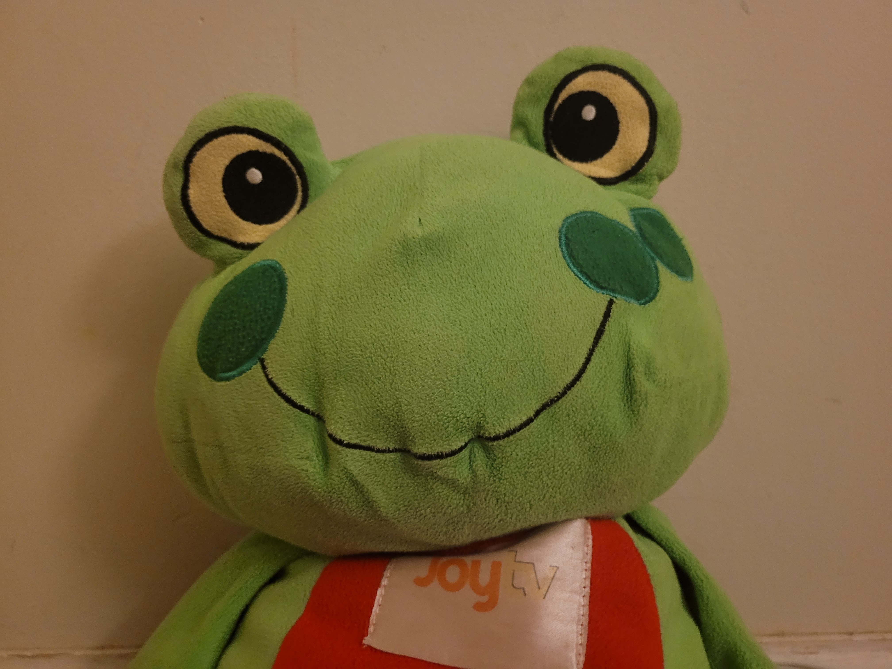

Meet Frog
Frog is best known as the co-host of "The Camel and Frog Live! Podcast." Frog didn't debut until Christmas 2017 when we were filming with the rest of the characters in practice films. Frog's friend is named "Butterfly" and their most common trait is the "JoyTV" badge attached to their bodies. Frog succeeded him in 2018. Today, Frog was a contestant in the parody WWTBAM and guest contestant in the parody version of Super Millionaire as well!

Above are the television tags attached.